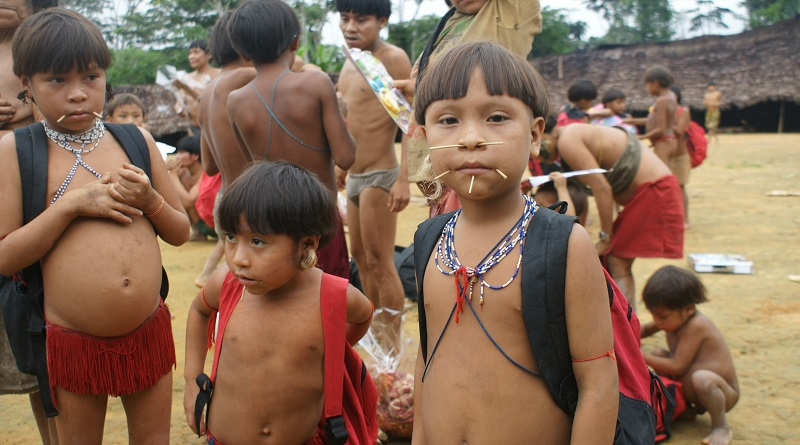
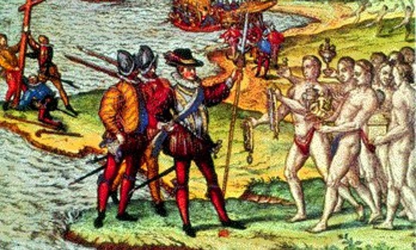
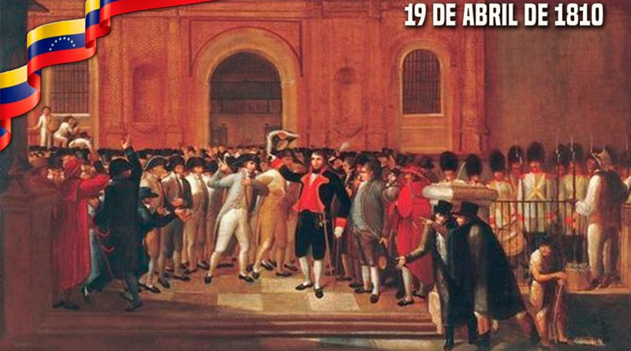
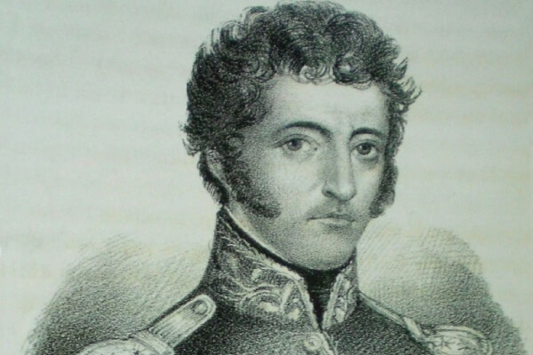

Etapa precolombina
es cronológicamente el más largo, se inicia con el poblamiento del continente americano 15.000 años antes de Cristo y finaliza con la llegada de los españoles en 1492 y para Venezuela culmina en 1498.
Etapa colonial
Cristóbal Colón abordó las costas de Venezuela en su tercer viaje en el año 1498. Después llegaron a ella Alonso de Ojeda. Amerigo Vespucci, Juan de la Cosa, Cristóbal Guerra, Vicente Yáñez Pinzón y otros. Se establecieron en la isla Trinidad y remontaron el Orinoco en busca de las riquezas de El Dorado. Pero su acción resultó infructuosa.
Independencia de Venezuela
Como causas de la independencia de Venezuela, pueden señalarse: el ejemplo de EE.UU., la difusión de las ideas liberales, el apoyo prestado por Gran Bretaña y los intereses económicos de los criollos, perjudicados por el monopolio comercial español y por su apartamiento de los cargos de gobierno.
Oligarquía conservadora de Venezuela
Hasta 1850. el gobierno del país lo ejerció la llamada oligarquía conservadora, representada por Páez. En 1848, con el apoyo de los conservadores, fue elegido presidente José Tadeo Monagas. quien no tardó en derivar hacia el partido liberal, encabezado por A. L. Guzmán.